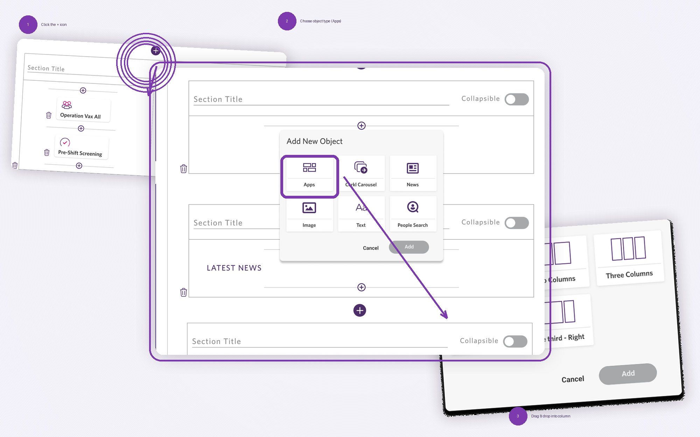
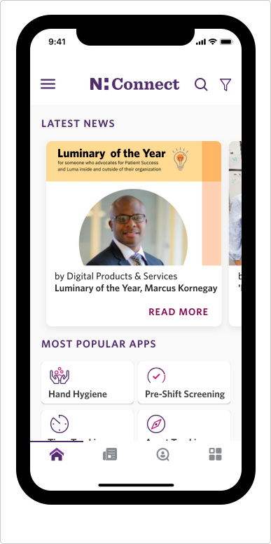

Designing a Dynamic Homepage Builder for Healthcare
Enabling non-technical teams to control mobile app experiences at scale across a major hospital network.


About NH Connect
A comprehensive corporate administration system for Novant Health. Developing specialised mobile and admin applications. A robust management system featuring an intuitive dashboard to meet unique requirements for seamless administrative functionality.
The vision was to bridge the gap between high-level hospital administration and the ground-level patient experience through a unified, modular interface.
Context & Problem
NH Connect serves as the backbone for over 10,000 active patients in the US, acting as their primary digital gateway to Novant Health services.
The Bottleneck
The internal team needed a flexible dashboard (like WordPress/Notion) to manage mobile app content in real-time without developer dependency.
Strategic Goal
Reduce iteration cycles from weeks to minutes and empower non-technical stakeholders to orchestrate the digital patient journey autonomously.
The Design Process
A rigorous editorial approach to enterprise software development.
Requirements Gathering
Closely working with PMs and stakeholders to define the dynamic "Homepage Builder" logic, ensuring scalability across different hospital departments.
Component Architecture
Building a library of 30+ enterprise-grade components in Figma with auto-layout, atomic design principles, and strict accessibility tokens.
Prototyping & Iteration
Rapidly prototyping every flow within the admin panel for both web and mobile previews, validating drag-and-drop interactions with end users.
The "No-Code" Experience
Defining the future of healthcare content orchestration.
Drag-and-Drop Builder
Dynamic block-based interface for instant content updates.

Live Mobile Preview
Side-by-side desktop builder and mobile viewport for real-time validation.

Architecting Efficiency
Five core features that redefined how the organization communicates with patients.
Drag & Drop
Fluid component layout management.
Targeting
Segment users by clinic proximity.
Scheduling
Timed content availability.
Live Preview
WYSIWYG patient app simulator.
Publish
Instant over-the-air updates.
Deep Dive: Simplifying Complexity

Why this works: We abstracted complex JSON properties into human-readable labels. Instead of margin-top: 24, users choose from "Relaxed," "Normal," or "Tight" presets. This ensures design consistency without needing CSS knowledge.

How complexity is handled: The targeting engine uses a "Natural Language Rule Builder." Users create rules like "Show 'Flu Shot Banner' IF 'Patient Age' is 'Greater than 65' AND 'Location' is 'Winston-Salem'."
Evolution & Iteration
Early prototypes focused heavily on the "infinite canvas" model. User testing revealed that non-designers felt overwhelmed by too much freedom. We pivoted to a **Structured Component Slotting** system which reduced the time-to-publish by 40%.
Low consistency, high errors, steep learning curve for clinicians.
High consistency, zero errors, 5-minute training time.